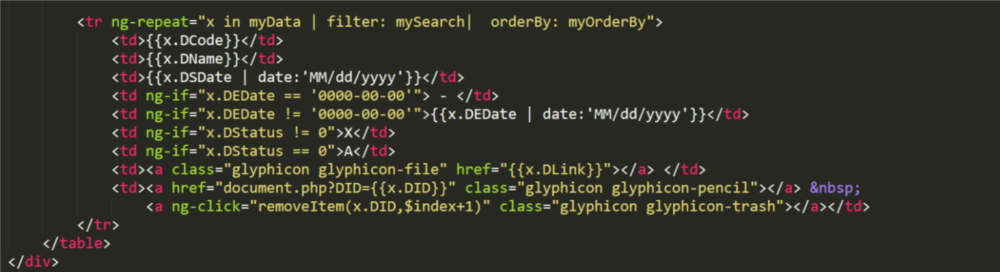

Miniprj3
MINIPROJECT3
This my Code
Post by 58160056 58160625 58160697, May 12, 2017.
Miniprj3 Code
ขออธิบายไว้ตรงนี้ก่อนนะครับ สำหรับ function() ต่างๆที่ได้อธิบายไปแล้วจะไม่มีการอธิบายซ้ำนะครับ ถ้าอยากรู้ให้ไล่อ่านกันเองนะครับ
และจะขออธิบายแค่ส่วนที่สำคัญๆสำหรับการเขียนโค้ดนะครับ
ในส่วนของโค้ดหน้า index จะมีการใช้ code คล้ายๆกับหน้า SearchComName และ SearchComYear นะครับคือจะมีบริเวณที่ใช้สำหรับการแสดงผลที่เหมือนกัน
แต่จะต่างกันตรงที่ index.php ไม่สามารถค้นหาข้อมูลได้ จะขออธิบายรวบไปเลยนะครับ
index.php & SearchComName.php & SearchComYear.php
เริ่มต้นด้วยการกำหนดชื่อ ng-app และ ng-control โดย ng-app เป็นการ setup angular project และ ng-control เป็นส่วนของตัวควบคุม
ซึ่งผู้จัดทำกำหนดชื่อของ ng-app และ ng-control ตามรูปด้านล่าง

ทำการสร้างตารางสำหรับการแสดงผล ด้วยแบ่งโค้ดออกเป็นสองส่วน ดังนี้
1.ส่วนหัวของตาราง
ส่วนนี้จะมีคำสั่ง ng-click ตามชื่อเลยครับเมื่อกดคลิกถึงจะทำงาน โดยใน ng-click จะมีคำว่า orderByMe(‘ตัวแปร’) คำสั่งตรงนี้จะทำการจัดเรียงบรรทัดใหม่เมื่อมีการกดคลิก
2.ส่วนข้อมูลภายในตาราง
ในส่วนนี้จะเป็นส่วนที่ใช้สำหรับแสดงผล โดยจะทำการดึงข้อมูลมาสำหรับหรับการแสดงผลมาจากฐานข้อมูล ภายในจะมี function ng-if สำหรับ
เช็คค่ารับเข้ามาว่าตรงกับเงื่อไขที่กำหนดหรือไม่ เช่น กรณีที่รับค่าวันที่ของ SEDate หรือวันที่สิ้นสุดมีค่าเป็น 0000-00-00 จะแสดงผลเป็น – ถ้าไม่
เท่ากับ 0000-00-00 จะแสดงวันที่นั้นๆออกมา เป็นต้น
<a href="document.php?DID={{x.DID}}" class="glyphicon glyphicon-pencil" ></a>
บรรทัดตรงนี้เป็นการกดเพื่อย้ายไปยังหน้า document.php ซึ่งเป็นหน้าสำหรับดูข้อมูลเต็มๆของชุดคำสั่ง โดยจะไปดูข้อมูลชุดคำสั่งตาม DID ที่ตรงกับคำสั่งนั้นๆ
<a ng-click=”removeItem(X.DID,$index+1)” class=”glyphicon glyphicon-trash”></a>
บรรทัดนี้จะเป็นฟังชันก์ที่ใช้สำหรับลบข้อมูลคำสั่งที่มีข้อมูลที่เกี่ยวข้องทั้งหมด
มาต่อที่ส่วนของ script จะเห็นว่ามี function ต่างๆมากมาย มีการติดต่อกับ module DocumentList ที่ตัว controller ListController ด้วยฟังก์ชัน $scope และ $http
$http – ดึงข้อมูลมาจาก getall.php ผ่าน method GET
.then(function mySuccess(response){$scope.myData = response.data.items;}, function myError(response) { $scope.content = “Error: ” + response.statusText; - เป็น function สำหรับการเช็ค Error
$scope.select – ข้อมูลภายในนี้เป็นข้อมูลที่ใช้สำหรับเลือกค้นหาด้วยปี
$scope.timeStart = $scope.select[0] – เลือกปีเริ่มเป็นตำแหน่งแรก ถ้าหากไม่เลือกปีเริ่มต้น
$scope.timeEnd = $scope.select[$scope.select.length-1]; - เลือกปีสิ้นสุดเป็นตำแหน่งสุดท้าย ถ้าหากไม่ได้เลือกปีสิ้นสุด
$scope.time = function() – เป็น function ที่ช่วยสำหรับการค้นหา เรียกใช้งานร่วมกับ search.php
$scope.removeItem = function(DID, index) – เป็น function สำหรับการลบข้อมูลในตาราง เรียกใช้งานร่วมกับ delDoc.php
ในส่วนของปุ่มที่จะทำการลิงค์ไปยังหน้าเพิ่มคำสั่งเป็นดังนี้
จะเห็นว่ามีการเชื่อมไปยัง insert.php โดยทำเป็นปุ่มกดดังรูปด้านบน
Search
จากที่ได้กล่าวมาข้างต้นว่าไฟล์ index.php ,SearchComName.php และ SearchComYear.php มีโครงสร้างที่คล้ายกัน แต่สิ่งที่หน้า index.php ไม่มีนั้นคือการค้นหาด้วยชื่อ และช่วงปี
จากโค้ดข้างต้นจะเป็นโค้ดที่ใช้สำหรับหน้าค้นหาข้อมูลภายในตาราง โดยใช้งานร่วมกับ script ที่กล่าวมาข้างต้น โดยสร้างให้อยู่ในรูปแบบ input ที่สามารถใส่ตัวอักษรและตัวเลขลงไปได้ใช้สำหรับช่องค้นหา ส่วนการค้นหาโดยใช้ปีจะเป็นการเลือกปี ภายใน function $scope.select มาเลือกแล้วนำมาเทียบกับปีภายในตารางเพื่อค้นหาโดยใช้ปี
insert.php
สำหรับไฟล์นี้จะใช้สำหรับเพิ่มรายชื่อกรรมการพร้อมชุดคำสั่ง โดยเริ่มต้นทำการกำหนด ng-app ,ng-comtroller ส่วน ng-init ให้ทำการเพิ่มเป็นค่าว่างใว้ เขียนได้ตามนี้
ต่อไปมาทำหน้าตาสำหรับกรอกข้อมูล
จะได้หน้าตาประมาณนี้ สำหรับกรอกชื่อจะอธิบายภายหลัง โดยแต่ละกล่องใส่ข้อมูลมีรายละเอียดดังนี้ ส่วน label เป็นส่วนหัวข้อไม่สามารถพิมพ์เพิ่มได้ ส่วน input เป็น tag สำหรับใส่ค่าข้อมูล
ng-model=”DCode” – ใช้สำหรับเก็บรหัสของชุดคำสั่ง รูปแบบ text
ng-model=”DName” – ใช้สำหรับเก็บชื่อของชุดคำสั่ง รูปแบบ text
ng-model=”DSDate” – ใช้สำหรับเก็บวันที่เริ่มคำสั่ง รูปแบบ date
ng-model=”DEDate” – ใช้สำหรับเก็บวันที่สิ้นสุดของชุดคำสั่ง รูปแบบ date
ng-model=”DLink” – ใช้สำหรับเก็บที่อยู่ลิงค์เอกสาร รูปแบบ text
สำหรับส่วนที่สามารถเขียนชื่อกรรมการนั้นจะพิเศษกว่าส่วนอื่นๆก่อนหน้านี้อยู่ สามารถเพิ่มชื่อกรรมการได้มากกว่าหนึ่งคน
ng-model=“choice.name” – เป็นการเก็บข้อมูลกรรมการ รูปแบบ text
การทำงานตรงส่วนนี้ จะมี tag span สำหรับเพิ่มจำนวนคนหลังช่อง input รายชื่อ สามารถเพิ่มได้กี่คนก็ได้ โดย tag นี้จะอยู่บนช่อง input อันแรกเสมอมาต่อที่การทำปุ่มสำหรับส่งข้อมูล
  – none-bearking space หมายถึงคำสั่งเว้นวรรคหนึ่งครั้ง มีสองตัวก็สองครั้ง ต่อไปก็ script ที่ใช้ก็มีดังต่อไปนี้
$scope.addNewCommittee = finction() – เป็น function ที่ใช้กับ tag span ตรงเพิ่มชื่อกรรมการ ให้สามารถเพิ่มทีละหลายๆคนได้
$scope.insertData = function() – เป็น function สำหรับตรวจสอบค่าของ DEDate และ DSDate สำหรับส่งค่า DStatus ขึ้นไป ทำงานร่วมกับไฟล์ insertDoc.php
postData – การส่งค่าขึ้นไปบนฐานข้อมูล
search.php
หน้าตาโค้ดที่ได้จะเป็นแบบนี้
อันดับแรกทำการเชื่อมต่อกับฐานข้อมูล
$DSDate – รับค่ามาจาก DSDate
$DEDate – รับค่ามาจาก DEDate
$sql – เลือกข้อมูล DSDate และ DEDate จากฐานข้อมูลชื่อ DocList
insertDoc.php
เป็นไฟล์ที่ใช้งานร่วมกับไฟล์ insert.php สำหรับเพิ่มข้อมูลลงบนฐานข้อมูล
มี function สำหรับเชื่อมต่อกับฐานข้อมูล
$data – เป็นคำสั่งสำหรับ decode ไฟล์ json จาก input โดยจะทำการ decode กับตัวแปรอื่นๆ
$sql ด้านบนจะเป็นการแทรกข้อมูลลงไปในตาราง
$sql ด้านล่างจะเป็นการเลือกข้อมูล DCode และ Dname จากฐานข้อมูล DocList
document.php
เป็นไฟล์ที่ใช้สำหรับดูข้อมูลของชุดคำสั่ง และสามารถแก้ไขได้เลย เริ่มที่ปุ่มสำหรับการแก้ไขชุดคำสั่ง

จะเห็นว่ามีการเชื่อมไปยังหน้า update.php โดยนำไอดีเดิมที่เก็บอยู่ในขณะนี้ไปด้วย ซึ่งจะทำเป็นปุ่มที่อยู่ใน tag a อีกทีหนึ่ง
มาที่ส่วนของการแสดงผลกัน ซึ่งแสดงผลแบบตาราง
ทำการดึงข้อมูลมาจากตำแหน่งปัจจุบันที่กดเลือก โดยจะแสดงออกมาในรูปแบบของตัวอักษรทั้งหมด
มาที่ส่วนของ script
ตัว script นี้ใช้งานร่วมกับ ทนกีสำ showDoc และไฟล์ getDoc.php โดย เป็นการดึง DID ที่ตรงกันออกมา
getDock.php
หน้านี้มีหน้าที่เก็บ DID แล้วส่งต่อไปให้กับไฟล์ที่ทำการร้องขอ เริ่มต้นที่สร้างส่วนเชื่อมต่อกับฐานข้อมูลเหมือนเช่นเคย
ต่อมาจากส่วนเชื่อมต่อฐานข้อมูล ก็มาถึงส่วนข้อมูล
$sql จะเห็นว่ามีการทำ NATURAL JOIN DocList และ ComName ที่ฐานข้อมูล จาก DID มีการ encode json แล้วส่งกลับไปเป็น str หรือข้อมูลรูปแบบ string
delDoc.php
ไฟล์ตัวนี้ใช้สำหรับการลบข้อมูลจากฐานข้อมูล DocCom และ DocList ที่ DID เริ่มต้นให้ทำการเชื่อมฐานข้อมูล
$DID – ทำการรับค่า DID
$sql – ทำการสั่งลบข้อมูลภายใน
getall.php
เป็นไฟล์ที่ทำการเก็บข้อมูลจาก DocList แล้วทำการ encode เป็น json เริ่มจากเชื่อต่อฐานข้อมูล
$sql – ทำการเก็บข้อมูล DID จากฐานข้อมูล DocList เพื่อทำการ encode เป็น json
updateDoc.php
เป็นไฟล์ที่ใช้งานร่วมกับไฟล์ชื่อ update.php เพื่อแก้ไขไฟล์เอกสาร เริ่มจากเชื่อมต่อฐานข้อมูลเหมือนเช่นเคย แล้วทำการ decode ตามรูปด่นล่าง
$data – จะทำการ decode ตัวแปรต่างๆที่ระบุเอาไว้
$sq; - ทำการอัพเดท ค่าที่อยู่หลัง SET จาก DID ที่ตรงกัน
$sql – ตรงส่วนนี้จะทำการลบข้อมูลชุดเก่าออกไปที่มี DID ตรงกัน
update.php
เป็นหน้าที่ใช้สำหรับการแก้ไข ทำงานร่วมกับไฟล์ updateDoc.php เริ่มต้นทำการเชื่อมต่อฐานข้อมูล และทำการรับค่า DID เข้ามาด้วย
ภาพด้านล่างเป็นภาพที่แสดงข้อมูลต่างๆที่มาจากหน้า document.php

วิธีการดึงข้อมูลจึงเป็นแบบเดียวกันกับ document.php แต่ในหน้าของ update.php สามารถแก้ไขข้อมูลต่างๆได้ยกเว้นวันที่ และเลขที่คำสั่ง ต่อมาเป็นการสร้างปุ่มสำหรับทำการ submit เขียนตามภาพเนล่าง
มาที่ส่วนของ script
ส่วนนี้จะเป็นการเชื่อมกับ module updateDoc
$scope.DID – มีค่าเท่ากับ DID
$sql – เลือกข้อมูลจากฐานข้อมูล DocCom ที่ทำการ NATURAL JOIN กับ DocList และ DocName ที่ DID
$scope.addNewCommittee = function() – เป็นคำสั่งสำหรับการเพิ่มชื่อกรรมการ
$scope.updateData = function() – เป็นคำสั่งที่มีการเช็ค DStatus จาก DSDate และ DEDate
มี function สำหรับการ post ค่าไปยังฐานข้อมูล
ในส่วนนี้มีการเชื่อมกับ module showDoc เพื่อทำการรับ DID จาก getDoc.php